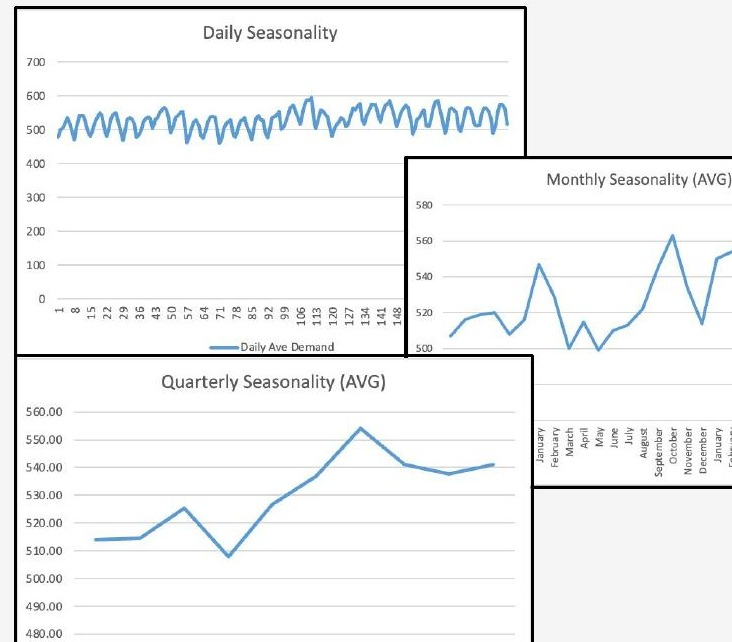
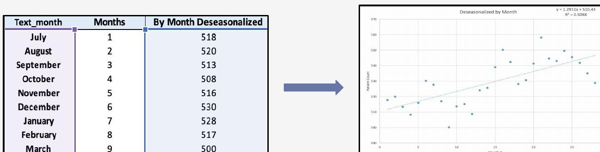

Regional Hospital Patient Volume Forecast
Team project — with Connor Farrell & Jadyn Jeanes
3-Month Forecast
28 Months of Data
A regional hospital's leadership team needed a data-driven read on patient volume to plan staffing and resources heading into the winter months.
Helped isolate day-of-week and monthly seasonality from 28 months of daily patient census data using PivotTable-derived seasonal indices, built the deseasonalized regression trendline, then reseasonalized the results to produce the final forecast.
Delivered a three-month (Nov–Jan) forecast identifying Wednesdays and Thursdays as peak-demand days and a January volume spike tied to post-holiday visits and flu season.
Business impact: directly informed staffing, scheduling, and supply-chain recommendations for hospital leadership.

